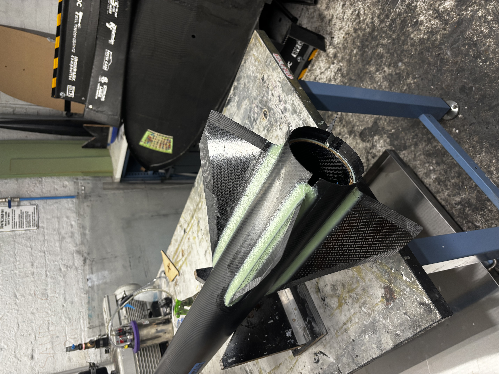
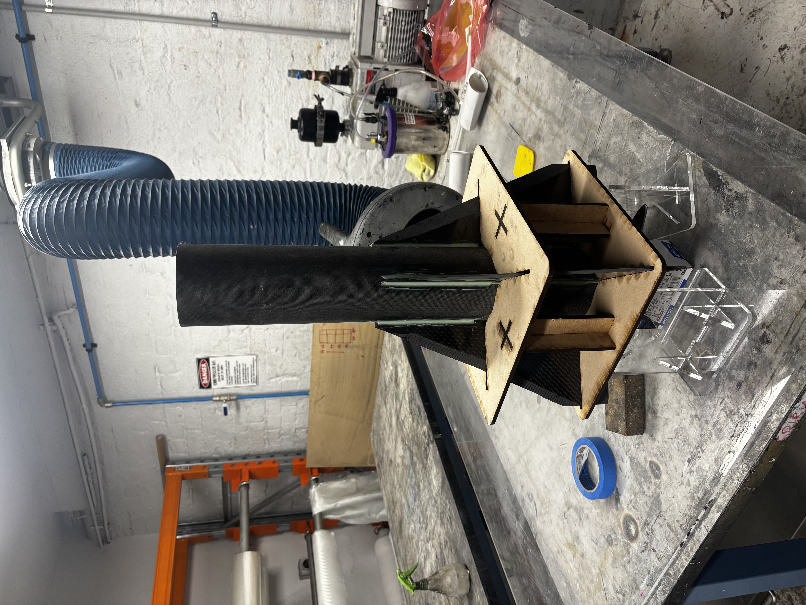
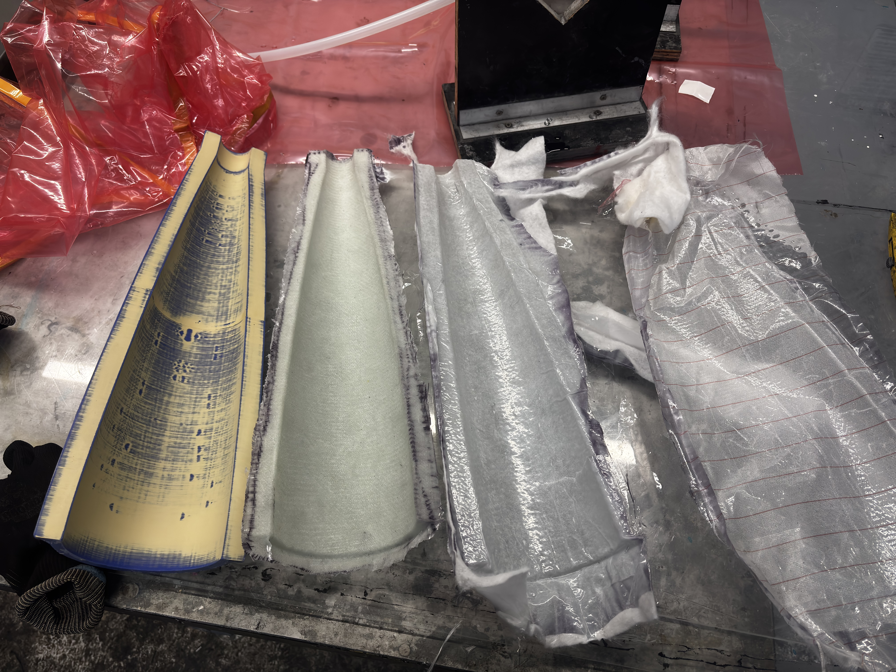
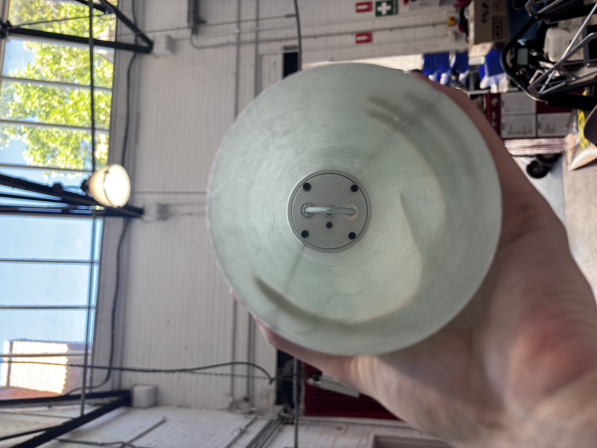

Airframe
The airframe is a full composite construction, roll-wrapped carbon body tubes, carbon plate fins, in-house carbon motor tube, fibreglass coupler and nosecone, and 6061-T6 aluminium bulkheads throughout.
Body tubes are COTS, made to my requirements. These are roll-wrapped carbon, three 800mm sections with 1.8mm wall thickness. Two sections were bonded internally to form the 1600mm booster tube as purchasing a single tube at that length would have significantly increased shipping. The third section forms the upper airframe.

Completed airframe — nosecone assembly

Fin can — double diamond profile for Mach 2 flight
Fin Can
Fins were hand cut from 5mm carbon plate, then chamfered on a belt sander to a double diamond profile, optimised for high altitude, high velocity flight to minimise drag. The motor tube was manufactured in-house, wet laid onto a mandrel, for a rapid turnaround.
A custom fin jig was laser cut from 6mm MDF, designed so all four fins could be tacked onto the motor tube simultaneously and held in precise alignment during cure. After the initial tack bond using Epikote MGS BPR 135 bonding paste, larger structural fillets were added between each fin and the motor tube, and lasercut cut centering rings were bonded at equidistant spacing.
The aft-most centering ring provides the interface for how thrust is transmitted through the airframe, that is pushing through the fin can into the airframe, rather than into the motor retainer. To reinforce this region, extra care was taken around the aft centering ring bond to the fins and outer airframe to ensure the N3300 does not rip through the rocket.
The fin can was then slid into slotted sections of the booster tube and bonded with 25mm radius structural fillets of the same paste, large enough to distribute the fin root loads across the tube wall effectively. The assembly was finished with a tip-to-tip carbon layup, four layers, wet laid and vacuum bagged, staggered from small to large to prioritise root chord strength where loads are highest. This added approximately 0.8–1.6mm of tapered thickness, bringing the fin flutter velocity to approximately Mach 2.6, a comfortable margin above the design velocity of Mach 2.

Fin can assembly prior to tip-to-tip

Custom laser-cut MDF fin alignment jig
Nosecone
The nosecone was a manufacturing method I developed specifically for this build. The nosecone, a von Karman LD Haack Series is optimised for pure speed, and is a custom shape just for this rocket, making a one-off manufacturing method the ideal workflow. Starting with a single split mould, 3D printed for rapid prototyping, I bogged and primed the mould surface, then wet laid and vacuum bagged two fibreglass half-shells. Fibreglass was chosen over carbon for RF transparency, allowing the GPS antenna housed inside to transmit unimpeded.
The two halves were bonded internally with fibreglass strips, producing a clean external surface with no mechanical fasteners. An epoxy ring, machined by me on a manual lathe, was bonded to the internal wall of the nosecone, providing the structural interface for the GPS bulkhead. The GPS bulkhead itself was also machined on the lathe, bolting into the ring and providing the parachute attachment U-bolt mount. A secondary retention system uses an M6 threaded rod running from the brass nose tip through to the bulkhead, tensioning everything in compression. Whilst the pullout force on the epoxy ring is high enough without the nosetip tensioning the bukhead, a redundant failsafe is better than one!
The nose tip was a custom part machined externally, as achieving a clean point to that tolerance on a manual lathe was beyond what I could reliably complete, and the brass acts as useful ballast for stability margin tuning.

Nosecone half fresh out of the mould

Completed shell with mounted bulkhead
Machined Components
All aluminium components were machined by me personally. The bulkheads — four in total across the avionics bay and recovery interfaces — were milled on a Tormach CNC mill. The GPS bulkhead, epoxy ring, and motor retainer were turned on a manual lathe.
The motor retainer is a 6061-T6 aluminium component that closes the aft end of the airframe. It attaches radially using 12 M5 countersunk screws into the body tube, and is designed to support the mass of the motor on the pad whilst preventing the casing from sliding free after burnout. The 12-bolt pattern provides approximately 80kg of holding force — well in excess of the motor mass. Thrust transfers through the airframe via the aft enclosure interfacing directly with the motor tube, not through the retainer itself.

U-bolt yield testing on Instron machine
6061-T6 aluminium bulkhead — Tormach CNC mill
Avionics bay
The avionics bay sits within a 300mm fibreglass coupler, manufactured by laying fibreglass internally to a prepared body tube for a precision sliding fit. Two 6061-T6 aluminium bulkheads enclose the bay, tied together by three threaded rods: a central M8 rod resisting the tension from both parachute attachment U-bolts, and two M4 rods preventing the sled assembly from rotating between bulkheads.
The avionics sled was 3D printed in ABS-GF — a glass-fibre reinforced ABS blend chosen for its improved structural and thermal properties over standard ABS. All components mount to the sled via M3 screws into heat-insert nuts, with Loctite throughout. The modular design allows individual components to be removed and replaced without disturbing the rest of the bay.
Two entirely independent Blue Raven flight computers control the apogee and main separation events, with the secondary timed 1–2 seconds after the primary as a redundant backup. A Featherweight GPS system is housed in the nosecone for RF transparency. Pyrotechnic connections use Wago snap connectors epoxied to the avionics bulkheads, wired with a common positive and independent negative leads for each charge — a clean, reliable separation from the flight computer outputs.
Avionics sled — dual Blue Raven, 9V batteries, switch mount
Aluminium bulkhead — threaded rods, wire passthrough, Wago connectors
Recovery system
The recovery system uses dual separation, dual deploy. At apogee, a 24" pilot chute deploys to stabilise descent. At approximately 1,500 ft a 96" Fruity Chutes Compact Iris deploys for landing. Separation is driven by 4F black powder packed into nylon burst tubes — a method proven across multiple ARES flights. A calculated 1.2g of BP per bay was increased by 0.5g and validated through ground testing.
Shear pin count was calculated directly from the pressure differential at 25,000 ft. At apogee, internal pressure exceeds external by 64.7 kPa, producing 660N of force on each 114mm bulkhead. At 298N shear strength per M3 nylon pin, three pins per bay are required — validated through ground separation testing.
All recovery lines are 5mm braided SK-75 Dyneema, rated to approximately 3,100kg before yielding — significantly in excess of the shock loads expected during chute deployment. Lines are finger-trapped and attached via soft shackles to M6 316 stainless steel U-bolts at the nosecone, avionics coupler, and motor retainer.
Recovery line routing diagram
Main parachute bay
Nylon burst tube ejection charge assembly
Finishing
After all structural work was complete, the entire airframe was bogged and sanded over several days to eliminate surface imperfections from the composite layups and bonding operations. The finish was taken to automotive standard before painting — the paint was sponsored by DNA Custom Paints, applied with custom stickers and sealed with a two-pack clear coat for durability and gloss.

SA Great — finished and ready for flight